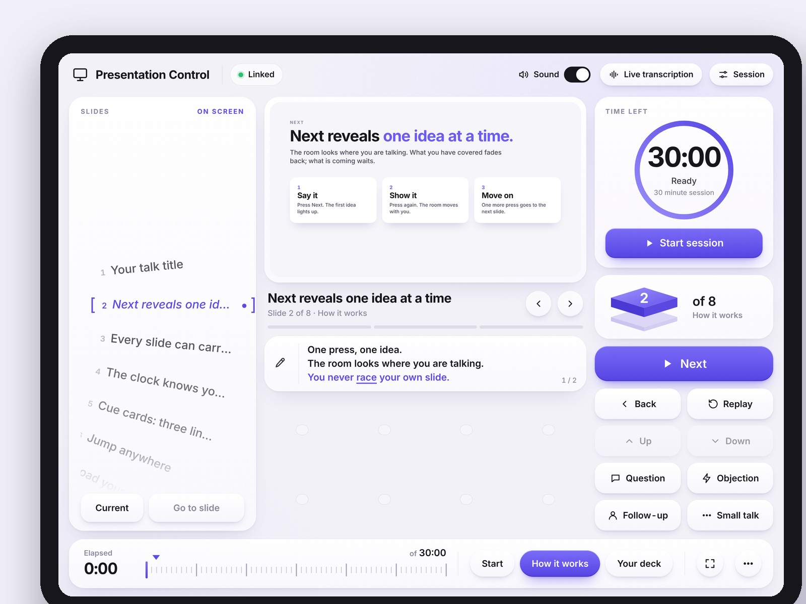

Try it right here with the sample deck. Open this page on your iPad (sideways) or iPhone for the real feel. This preview runs only on your device and only plays the sample deck.

Spin the slide wheel to any slide. The room sees nothing until you press Go.
Every slide can carry backup slides for the questions you expect. Return brings you home.
Ahead, on pace or behind, against the minutes you planned. Questions don't count against you.
The full version loads your own deck from any PDF, shows the slides on your computer and projector, keeps phone and tablet in sync, and includes optional live transcription and a Claude skill that builds a full deck from your notes. Made by Vincent Bish.